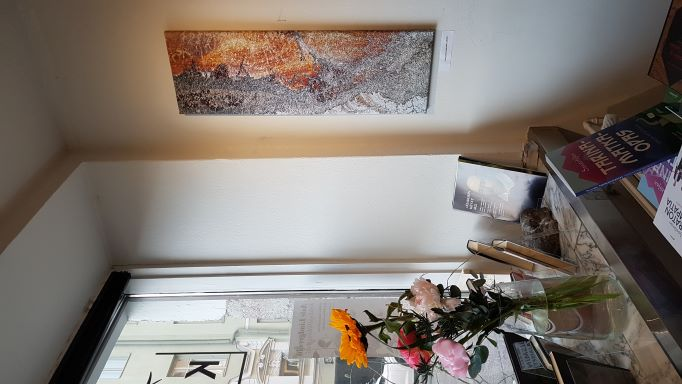

Emergenssi tarkoittaa pulpahtelua, jonkun asian ilmaantumista, kun eri osat ovat kohdillaan ja muodostavat yhdessä jotain suurempaa. Esimerkkinä kultahippu, joka rakentuu vasta kulta-atomien yhdistyessä tai muurahaiskeko, joka syntyy eri tehtävissä olevien murhaisten saumattomasta yhteistyöstä. Kuvan 1 valokuvateoksen nimi on Matkalla. Kuinka usein emme havainnoi matkamme merkitystä, vaikka kaikilla matkoilla on oma tarinansa.
Yrityksen nimi Emergenssi Oy sopii tähän aikaan, jossa tarvitsemme yhteispeliä enemmän kuin koskaan. Ilmasto muuttuu oletettua nopeammin ja vauhdittaa luontokatoa. Nämä teemat on kytkettävä yhteen ja kestävyys rakennettava yhteistyössä eri toimialojen kanssa. Meidän on yhdessä muodostettava vastuullisuuden ekosysteemi, jossa haluamme auttaa ja palvella kumppanuuksissa ja näin saavuttaa vahvempaa osaamista, ymmärrystä tilanteeseen varautumiseksi ja hyvinvoinnin vahvistamiseksi.
Perustin Emergenssi Oy:n tammikuussa, koska olen lähes 30 vuotta ollut kehittämässä kestävän kehityksen yhteiskuntaa erilaisissa valtiollisissa ja virkamiesrooleissa sekä myös tutkijana ja opettajana. Strategioiden moninaisuus ja eri toimialojen ja tieteenalojen välisyys ja välillä kommunikoimattomuuskin on tullut tutuksi. Kutsun teidät kaikki Rakkaudesta resilienssiin-näyttelyyni Kulttuurikulmaan Vironkatu 12, joka liittyy siihen, että tarvitsemme enemmän työkaluja oivaltaaksemme yhteistyörakenteet uudella tavalla.
Vastuullisuustyö on useiden työpöydällä ja olen saanut osallistua ammattiliittojen Loimu, Ekonomistit ja Lakimiesliitto vastuullisuustyönyhteistyöhön nyt keväällä. Laadin heille videoita maapallon planetaarisista tekijöistä kestävän kehityksen vahvistamiseksi. Vertaismentorointi on tukenut omaa innovaatiopoliittista osaamistani. Olen juuri oivaltanut uuden asian kestävyyden rakentamisesta. Sen, että yhteiskuntamme eri toimijat ymmärtävät ekosysteemipalvelut eri tavalla ja siksi vastuullisuuden ekosysteemien kokonaisuuden kuvaaminen voi tukea ymmärrystä erilaisten riskien hallitsemiseksi ja yhteiskunnan yhteistyörakenteiden vahvistamiseksi.
Tässä muutoksen ajassa haasteena on ensinnäkin muutoksen nopeus ja toiseksi laaja-alaisen kokonaisuuden haltuunotto. Usein kestämättömyys syntyy kiireessä ja siinä, että ei huomioida kokonaisuutta vaan ajetaan ns. vain kapeaa politiikkaa tai ns. vain oman tuotteen tai palvelun etua. Se on haitaksi kokonaisuudelle ja voi aiheuttaa riskien kasautumista organisaatioon niin tuotantoketjuihin, raaka-aineiden saatavuuteen kuin henkilöstönkin kuormittuneisuuteen.
Me rakastamme tarinoita, koska ne auttavat meitä ymmärtämään tärkeitä asioita. Tässä alla tarina Rakkaudesta Resilienssiin näyttelyn syntymiselle, joka on osa myös Emergenssi Oy:tä, koska tieteiden ja taiteiden välisyys vahvistaa aivoissamme syvempiä kivikautisiakin kerroksia. Tämä valokuvateos Lumisade Kivikaudella kuvassa 2. palauttaa meidät muistamaan ihmisen evoluution hitauden. Luonnossa osa prosesseista on hyvin hitaita ja juuri siksi niin kestäviä.
RAKKAUDESTA RESILIENSSIIN- näyttelyn esittelyteksti
Erilaisten kielten merkitys ymmärryksen ja yhteisöllisyyden rakentamisessa
Saara Lilja Toukokuu 2022 Kulttuurikulma: maalauksia, valokuvia ja runoja
Tervetuloa kurkistamaan kuva- ja tekstipäiväkirjojen sivuille tutkimusmatkalle havaintoihin tieteen ja taiteen välisyydestä yhteiskunnallisen resilienssin eli muutoksensietokyvyn vahvistumiseksi. Elämme muutoksessa joka päivä ja olemme osa jotain yhteisöä joka päivä – vuorovaikutus on osa meitä.
Näyttelyn teokset ovat syntyneet tutkimusmatkalla omiin voimavaroihin ymmärtää ja yhdistää ilmastonmuutos- ja luonnon monimuotoisuusosaamista. Miksi pysähtyisimme ja katsoisimme ympärillemme ja yrittäisimme tehdä toisin? Yrittäisimme ymmärtää erilaisuutta, poikkitieteellisyyttä, tieteiden ja taiteiden välisyyttä.
Ihmisten erilaisuuden vuoksi tarvitsemme eri kieliä, sanoja, kuvia, ääniä, musiikkiakin, eri murteita - niin erilaisia tekemisen tapoja. Kommunikaatio on vaikeaa, koska usein me kuulemme vasta, kun luotamme ja pysähdymme.
Miksi ymmärrämme toisiamme välillä kovin huonosti ja liian hitaasti? Voisiko taide havahduttaa ja edistää kestävyysmuutosta uudella tavalla? Asioiden tiedostaminen tarvitsee tiedon lisäksi kokemuksellisuutta ja osallisuutta. Tämä näyttely on kokeilu ja yritys havahduttaa ymmärtämään sitä, mitä on vaikea ymmärtää ja yritys edistää yhteistyötä siellä missä sitä ei vielä ole.
Osa valokuvista on Lomonosovin maan postinumero- vaelluskuunnelman käsikirjoitusretkiltä Itämeren rannalta, Kiitos Koneensäätiön. Haluan kiittää luovuuteni innoittajia Lomonosovin maan-retkikunnan johtajaa Katri Purasta ja koko retkikuntaa, säveltäjä ja kuoronjohtaja Mia Makaroffia sekä koko Vivace- kuoroperhettä, kuvataiteilija Maarit Myllystä ja Lumoudu Luonnosta-kurssilaisia sekä tutkija Jaana Kouria Åbo Akademista ja erityisesti rakkaita naapureitani ja perhettäni tuestanne tällä yhteisellä matkallamme.
TARINA NÄYTTELYN SYNTYMISELLE
Haavankeltajäkälä (Xanthoria parietina) loistaa haavan rungolla kuin aurinko. Minkä ilon auringonpaiste antaakaan pimeän talven jälkeen. Mikä energia ja riemu. Tämä haavan rungolla kasvava jäkälä loistaa siinä kaikkina vuodenaikoina satoi tai paistoi. Haavalla (Populus tremula) on erityinen merkitys luonnossamme, koska se ylläpitää luonnon monimuotoisuutta.
Näyttelyn keltainen jäkälä on joku muu, en tiedä mikä, mutta kaunis se on. Syynä taululle ei ole yksin keltainen jäkälä vaan valkoinen laikku. Tuo valkoinen jäkälä kuvaa sulavaa jäätä muuttuvassa ilmastossa ja muistuttaa jään merkityksestä. Jäkälätaulu on kartta. Kartta, joka on syntynyt itiöiden laskeuduttua puupöydälle Saimaan rannalle, Laukansaaren rantasaunan oleskelulaiturille. Kuinka eri lailla me näemmekään meille katetun pöydän.
Tämä näyttely on 30-vuotisjuhlanäyttely YK:n kestävän kehityksen kunniaksi. Rio de Janeirossa vuonna 1992 vahvistettiin globaalisti sekä ilmastonmuutoksen torjuntaa että luonnon monimuotoisuustyön toimeenpanoa. Pääsimme tuolloin ylioppilaaksi Käpylän lukiosta ja yllätyin, kun opiskelijayhteisössä ydinvoimaa ei pidettykään kestävänä energiaratkaisuna. Kasvihuoneilmiön voimistuminen havahdutti tuolloin ja samaa pohditaan edelleen: Kuinka kestävyys voidaan ymmärtää niin monella tapaa?
Suomalaista metsälainsäädäntöä uudistettiin tuolloin 1990-luvulla ja avainbiotoopit eli erityisen tärkeät elinympäristöt kuvattiin. Vuosien varrella asiat ovat edenneet vähitellen, on kehitetty talousmetsien hoitoa ja ennallistamista, tuotteistettu ekosysteemipalveluita eli luonnon meille tarjoamia palveluita, rakennettu METSO-ohjelmaa ja yritetty laatia kompensaatiolle yhteisiä pelisäätöjä. Muuttuvan ilmaston vuoksi metsätuhot lisääntyvät ja on kiire lisätä resilienssiä vahvistavia rakenteita, kuten sekametsiä – niitä haavan runkoja. Asiat etenevät välillä valitettavan hitaasti. Tuntuu, että tieteellinen tieto ei saavuta päätöksentekoa.
Näette teoksia, joiden matka on alkanut vuonna 2017, kun Suomi oli Arktisen neuvoston puheenjohtajamaa. Saimme USA:lta Fairbanksin deklaraationa arktisille maille laaditun Arctic Resilience Action Frameworkin toimeenpanon. Yhteistyöpaperin tavoitteena oli käytännössä edistää kestävää kehitystä. Se oli vaikeaa aluksi, kun ei ymmärretty tieteen, politiikan ja paikallisten toimijoiden erilaisia näkökulmia ja kokemuksia.
Resilienssi tuli minulle tuolloin uutena yhteiskunnallisena käsitteenä. Muutosjoustavuus tai muutoksensietokyky kiehtoi minua heti. Tutustuin alkuperäiskansoihin ja arktiseen yhteisöön. Arktinen alue lämpenee lähes neljäkertaa nopeammin kuin muut alueet maapallolla ja siksi kyky toimia riskien hallitsemiseksi koskettaa juuri arktisia yhteisöjä. Miten toimitaan, kun ikirouta ja jäätiköt sulavat? Oli merkityksellistä tehdä yhteistyötä venäläisten ja usalaisten ja muiden arktisten kansojen kanssa. Sain sydämenmuotoisen lemmikinvärisen helmikirjaillun rintakorun inuiittinaiselta, Kanadan eskimolta muistoksi hänen sukunsa hankaluuksista haasteellisessa jäätilanteessa ja sen vaikutuksista elämään. Järjestimme Rovaniemellä Resilienssifoorumin vuonna 2018 ja muistan elävästi kuinka erilaiset kulttuuriset taustat ja tarinankerronta nivoutuivat ilmastopaikkatietoon ja sää- ja ilmastoriskien ennakointitarpeeseen – saavutimme yhteisöllisen tunnelman.
Ilmastonmuutoksen faktat ovat selvät ja siksi tilanteen on muututtava. Ihmisten kyky ymmärtää muutos ja sen nopeus sekä taito toimia on haasteena. Ilmastonmuutoksen torjuminen ja luonnon monimuotoisuuden vahvistaminen ovat isoja planetaarisia kysymyksiä, jotka tulisi osata kytkeä elämäämme. Tilanne on vaikea ja siksi yhteistyön merkitys korostuu. Tieteiden ja taiteiden välisyys on keskeinen ymmärrystämme ja yhteisöllisyyttä vahvistava tekijä, koska me ymmärrämme niin eri tavoin.
Vastasin valtioneuvoston ilmastonmuutokseen sopeutumistyön koordinaatiosta vuosina 2016–2019 ja kiitokseksi saimme Timanttitekopalkinnon Turvallisuuskomitealta ja Erve-foorumilta, koska kytkimme ilmastokysymykset vahvemmin turvallisuuskenttään. Henkka Hyppönen piti Finlandia-talon juhlassa esityksen intoa puhkuen keväällä 2019. Hän puhui ihmisen evoluution hitaudesta ja siitä, kuinka opimme hitaasti, esimerkkinä kivikirveen käytön oppiminen. Se vahvisti edelleen haluani selvittää sitä, miten muutos tapahtuu ihmisyhteisössä ja miten yhteisöt muodostuvat ja miten yhteisöt ymmärtävät toisiaan, oppivat ja tarttuvat uusiin asioihin.
Toivon, että tämä näyttely pysäyttää jonkun ja havahduttaa johonkin uuteen. Luonto auttaa meitä luontopohjaisin ratkaisuin tässä haasteellisessa muutoksessa. Yhteys luonnon ja ihmisen välillä voi alkaa myös siitä, että kaksi erilaista ihmistä kohtaavat ja löytävät toisensa uudella tavalla.
Rakkaus on elämän ja ilon alkuvoima, energia, joka saa meidät toimimaan. Tuntuu, että tässä ajassa resilienssiämme vahvistaa eniten juuri se, että löydämme yhteyden muihin ihmisiin ja ympäröivään luontoomme ja arvostamme erilaisuutta ja toiseutta. Resilienssi vaatii rohkeutta luottaa muihin ja rohkeutta luottaa itseensä ja rohkeutta kokeilla ja tehdä virheitäkin. Tässä muutoksen ajassa resilienssi rakennetaan verkostossa, toinen toistamme tukien.
Kiitos, että olet täällä.